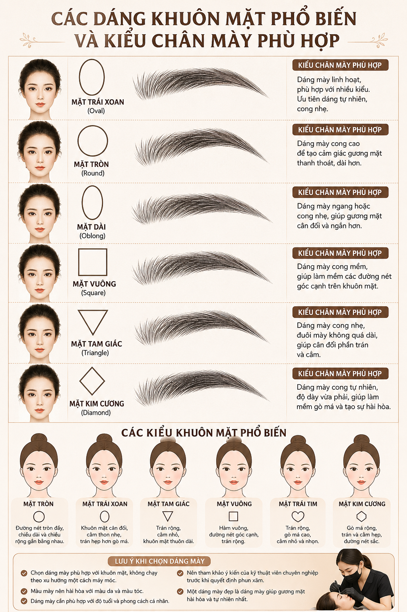
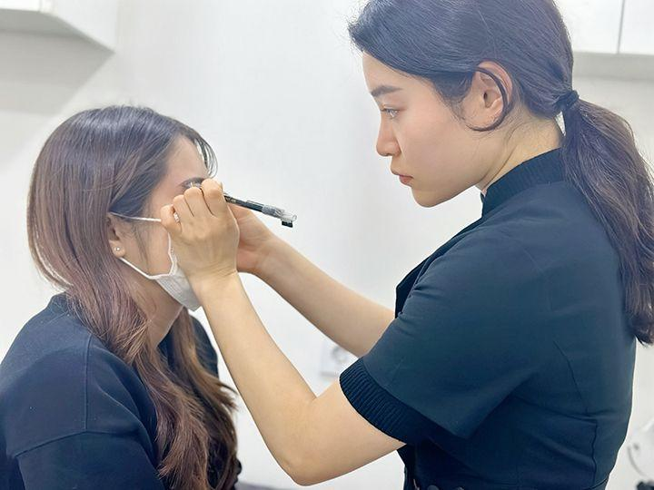

Cách Chọn Dáng Mày Theo Khuôn Mặt
Một đôi chân mày đẹp không chỉ giúp gương mặt sắc nét hơn mà còn tạo cảm giác trẻ trung, cân đối và hài hòa. Tuy nhiên, không phải dáng mày nào cũng phù hợp với mọi người.
Đó là lý do trước khi phun mày, kỹ thuật viên luôn cần phân tích khuôn mặt, tỷ lệ gương mặt và phong cách của từng khách hàng thay vì áp dụng một mẫu chung.
Vì Sao Phải Chọn Dáng Mày Theo Khuôn Mặt?
Chân mày có ảnh hưởng rất lớn đến tổng thể gương mặt. Một dáng mày phù hợp có thể giúp gương mặt cân đối hơn, mắt trông to và sáng hơn, tạo cảm giác trẻ trung và tăng sự hài hòa khi nhìn trực diện lẫn góc nghiêng.
Ngược lại, nếu chọn sai dáng mày, khuôn mặt có thể trông già hơn, dữ hơn, thiếu cân đối hoặc kém tự nhiên.
Cách Xác Định Khuôn Mặt
Bạn có thể đứng trước gương, buộc gọn tóc và quan sát chiều rộng trán, gò má, hàm và cằm. Từ đó có thể xác định khuôn mặt thuộc nhóm mặt tròn, mặt vuông, mặt dài, mặt trái xoan, mặt trái tim hoặc mặt kim cương.


Gợi Ý Dáng Mày Theo Từng Khuôn Mặt
Chọn Màu Mày Theo Màu Tóc
Không chỉ dáng mày, màu sắc cũng rất quan trọng. Tóc đen thường hợp nâu đen hoặc nâu lạnh. Tóc nâu có thể chọn nâu chocolate hoặc nâu tự nhiên. Tóc nhuộm sáng thường hợp nâu sáng hoặc nâu tây.
Màu mày nên hài hòa với màu tóc, màu da và phong cách trang điểm thường ngày để kết quả sau bong không bị quá gắt.
Chọn Dáng Mày Theo Độ Tuổi
Khách từ 18-30 tuổi thường hợp dáng tự nhiên, mềm mại. Nhóm 30-45 tuổi có thể ưu tiên dáng sắc nét vừa đủ nhưng vẫn hài hòa. Trên 45 tuổi nên chọn dáng cong nhẹ, màu dịu và không quá đậm để gương mặt trẻ hơn mà không bị cứng.
Những Sai Lầm Khi Chọn Dáng Mày
Rất nhiều khách hàng chọn dáng mày theo người nổi tiếng, theo trend TikTok hoặc theo bạn bè. Thực tế, mỗi người có tỷ lệ gương mặt, độ dày lông mày, màu da và phong cách khác nhau hoàn toàn.
Một dáng mày đẹp trên người khác chưa chắc đã đẹp trên khuôn mặt của bạn. Vì vậy, bước đo vẽ và chỉnh sửa trước khi phun rất quan trọng.
ELLY PMU Thiết Kế Dáng Mày Như Thế Nào?
Tại ELLY PMU, trước khi thực hiện, khách hàng sẽ được phân tích khuôn mặt, đo tỷ lệ vàng, vẽ thử dáng mày, chỉnh sửa theo ý khách và chỉ thực hiện khi khách đồng ý.
Quy trình này giúp hạn chế tối đa tình trạng phải sửa mày sau này, đồng thời giúp khách nhìn trước dáng mày sẽ nằm trên khuôn mặt mình như thế nào.
Checklist Chọn Dáng Mày
Xác định đúng khuôn mặt trước khi chọn dáng.
Không chạy theo xu hướng nếu không hợp gương mặt.
Chọn màu mày phù hợp với tóc và màu da.
Ưu tiên sự tự nhiên, mềm mại và hài hòa lâu dài.
Tham khảo kỹ thuật viên trước khi quyết định.
Câu Hỏi Thường Gặp
Mặt tròn có nên làm mày ngang?
Không nên làm quá ngang. Mày cong nhẹ thường giúp gương mặt cân đối và thon hơn.
Mặt vuông nên làm mày gì?
Mặt vuông thường hợp dáng mày cong mềm, giúp các đường nét trông hài hòa hơn.
Có thể thay đổi dáng mày theo ý thích không?
Có, nhưng nên điều chỉnh dựa trên tỷ lệ khuôn mặt để đảm bảo tính thẩm mỹ và độ tự nhiên.
Kỹ thuật viên có vẽ thử trước không?
Tại ELLY PMU, khách hàng sẽ được đo và vẽ thử dáng mày trước khi thực hiện. Chỉ khi khách hài lòng mới tiến hành phun mày.
Kết Luận
Một đôi chân mày đẹp không phụ thuộc vào xu hướng mà phụ thuộc vào sự phù hợp với từng khuôn mặt. Chọn đúng dáng mày không chỉ giúp gương mặt cân đối hơn mà còn tạo cảm giác trẻ trung và tự nhiên trong nhiều năm.